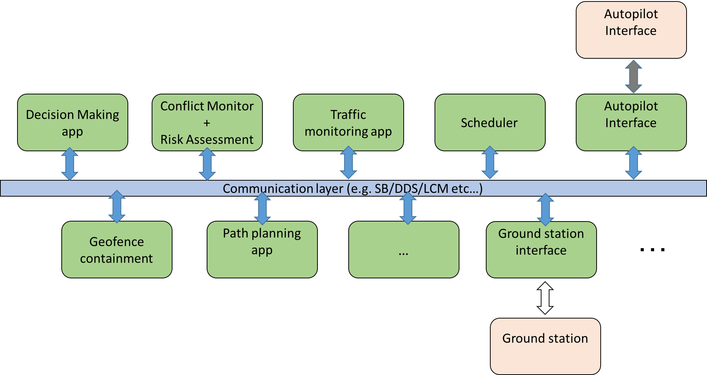

What is ICAROUS?
ICAROUS stands for Independent Configurable Architecture for Reliable Operations of Unmanned Systems. It is a software architecture that enables the robust integration of mission specific software modules and highly assured core algorithms for building safety-centric autonomous unmanned aircraft applications. ICAROUS is a research effort under the auspices of the Unmanned Air Traffic Management (UTM) project. ICAROUS is a research in progress and is constantly evolving with the addition of new functionalities for single and multiple UAS.
What is it not?
ICAROUS currently depends on an external autopilot that can provide basic control and navigation functionalities (e.g. ArduPilot, PX4, Piccolo etc...). ICAROUS runs on a companion computer and communicates with the autopilot to orchestrate resolution maneuves to avoid imminent conflicts.Why ICAROUS?
The primary goal of ICAROUS is to enable beyond visual line of sight (BVLOS) missions for UAS without the need for constant human supervision/intervention. To this end, ICAROUS uses various tools and algorithms to provide an integrated reasoning, decision making and planning framework to enable numerous UAS applications while ensuring that relevant safety properties are never violated.
ICAROUS Architecture
Icarous is implemented in a distributed fashion enabling modularity and facilitating rapid incorporation of new features. The various core functionalities are each distributed across one or more applications. ICAROUS depends on an interprocess communication framework that provides publish/subscribe capabilities to exchange data between applications. The default implementation provided in the repository uses NASA's core Flight Systems (cFS) middleware to achieve this distributed architecture.
Feature Highlights
The current version of Icarous provides several core features. Each core feature is supported by libraries avaiable under the Modules folder. The available modules are:- DAIDALUS: Daidalus is a detect and avoid library developed at NASA Langley and provivdes functions to monitor for well clear violations against intruder vehicles. DAIDALUS also provides resolutions to avoid well clear violations in the form of track, ground speed, vertical speed and altitude resolutions
- Tea
- Milk